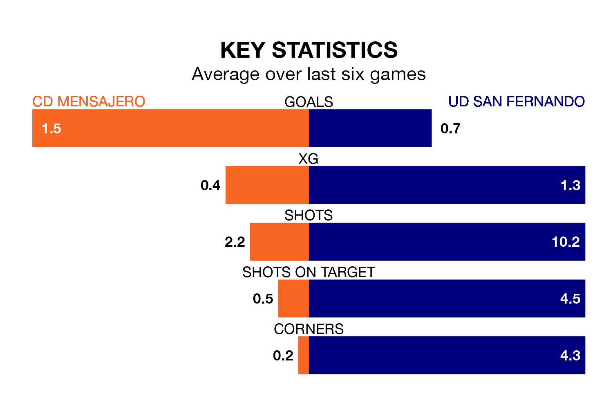

Struggling CD Mensajero face UD San Fernando at the Estadio Silvestre Carrillo on Sunday looking to build on a win in their last league outing.
After securing all three points with a 4-1 victory over Guadalajara on January 7, Mensajero sit 17th in Segunda División RFEF Group 5.
They travel to play a San Fernando side 15th in the standings, who lost in their last match, 2-0 against Getafe B.
With 14 goals in 17 games so far this season, San Fernando are the league's joint-third-lowest scorers with 0.8 goals per game. And they are conceding more than average, letting in 23 goals at a rate of 1.4 per game.
Mensajero, meanwhile, are average scorers, with 1.1 goals per game. They have conceded 1.7 goals per game.
The home side are in disappointing form in Segunda División RFEF Group 5, with one win and two draws from their last six games.
With three wins and a draw over that period, the visitors' form is better – they have taken 10 points from 18, compared to Mensajero's five.
In the last three years, Mensajero and San Fernando have played each other on seven occasions. Mensajero won five of them, San Fernando one, and they drew once.
On average, Mensajero scored 1.7 goals and San Fernando 0.9 in those matches.
Their last meeting was on September 3, when they played out a 1-1 draw.
Updated: 13:38 (UTC), 10/01/24